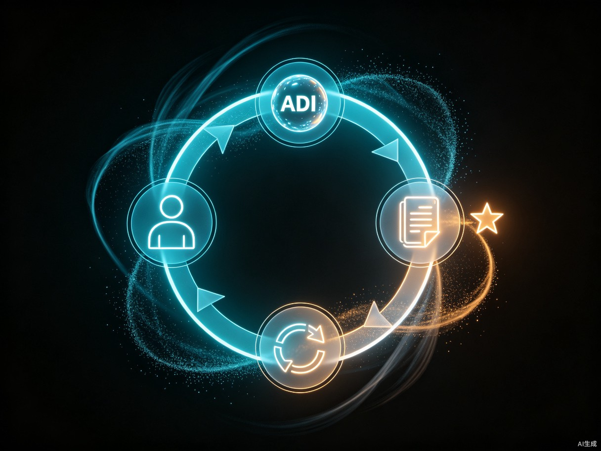

2026 年 7 月，第九届世界人工智能大会（WAIC 2026）在上海闭幕，主题被压缩成八个字——「智能伙伴，共创未来」[1]。同一个月，社交平台上「AI 抢工作」的焦虑再次刷屏：客服、文案、初级会计、流水线操作工，一连串岗位的「替代率」数字被反复转发，从 60% 一路飙到 99%[2]。
焦虑之下，舆论分成两个极端：一边是抵触派，把 AI 视作敌人；另一边是盲目派，幻想靠 AI 一夜躺赚。但这两种姿态都偏离了真实。真实的情况是：AI 不会取代人类，但会用 AI 的人会取代不用 AI 的人。本文要回答的核心问题是：当 AI 不再是工具而是环境，一个不打算成为「AI 创作者」的普通打工人，到底应该怎么活？
一、冲击全景：2026 年的就业版图长什么样
讨论「未来打工模式」之前，先看清当下正在发生什么。复旦大学的人工智能教授与高盛集团都给出了相近的判断——未来 3 至 5 年，全球将有约 3 亿岗位被生成式 AI 重塑，其中律师、行政、基础文案、客服等首当其冲[3]。斯坦福的一项研究更尖锐：未来 10 至 20 年，中国可能有 77% 的工作被弱人工智能不同程度地影响，美国约为 47%[3]。
但「被影响」并不等于「被消灭」。把 2026 年流传最广的一份替代率清单拆开看，会发现一个清晰的规律：替代率最高的，几乎全是规则明确、重复度高、低创造性的执行型工作。
| 岗位类型 | AI 替代率（网传口径） | 核心被取代环节 | 是否需要真人兜底 |
|---|---|---|---|
| 客服 / 电话销售 | 约 99% | 常规咨询应答、外呼清单执行 | 仅 20% 需真人 |
| 初级会计 / 税务 | 约 98% | 发票验真、报税、报表生成 | 合规与异常需人 |
| 基础数据 / 文书岗 | 约 95%+ | 数据录入、票据整理、行政文员 | 几乎不需要 |
| 笔译 / 字幕制作 | 约 90% | 文档翻译、AI 同传 | 重要场景需人审 |
| 内容审核 / 简单风控 | 约 85% | 违规信息筛查、信贷初审 | 边缘 case 需人 |
| 基础文案 / 内容小编 | 约 80%+ | 通稿、短视频脚本、营销软文 | 创意与定调需人 |
| 基础设计 / 剪辑 | 约 75%+ | 模板海报、自动剪辑、字幕生成 | 高阶审美需人 |
| 流水线操作工 | 约 70%+ | 装配、焊接、分拣 | 黑灯工厂普及 |
| 基础代码搬运 | 约 60%+ | 简单代码、BUG 调试 | 架构与决策需人 |
把这张表竖着看，结论很刺眼：凡是能写成 SOP 的、能被拆解成「输入—规则—输出」的，几乎都在被自动化吃掉。但表里还有第四列——「是否需要真人兜底」。绝大多数岗位不是被一刀切掉，而是被「空心化」：低价值环节交给 AI，高价值环节仍留在人手里，只是岗位的总人数在缩减[1]。
这给所有打工人留出了一线生机，但生机的形态变了：它不再来自「我会做这件事」，而是来自「我知道这件事该让 AI 怎么做、做完之后怎么判断对错」。这就是「跟随者」要解决的问题。
二、打工模式的三次演进：从机械化到智能化
理解 AI 冲击，需要把它放进更长的历史里看。人类打工模式的演进，本质上是一条「人如何与机器分工」的曲线。
每一次机器升维，都伴随着剧烈的失业焦虑——蒸汽机普及时有「卢德运动」，计算机普及时有「白领下岗潮」。但回看历史，每一次冲击过后，「使用机器的人」都站在了「被机器取代的人」之上。今天的 AI 冲击，本质上是第三次分工重写：人从「执行」退到「指挥」，从「动手」退到「动脑」、再退到「判断」。
这背后有一个被忽视的真相：每一次分工，对人的要求不是降低了，而是抬高了。工业化要求工人识字、守时；信息化要求白领会用电脑；智能化要求打工人会提问、会判断、会为结果负责。换句话说，AI 不是降低了打工门槛，而是把门槛从「会做」挪到了「会想」。
三、两种生存路径：AI 创作者 vs AI 跟随者
面对这道门槛，普通人面前其实有两条路。一条是「成为 AI 的创作者」——研究模型、训练微调、开发 Agent、构建基础设施。另一条是「成为 AI 的跟随者」——不造 AI，但能把 AI 用得炉火纯青，让 AI 成为放大自己价值的杠杆。
两条路看起来都通，但可行性差异巨大。把两条路放在同一张表里对比，就能看清各自的门槛与回报。
| 维度 | AI 创作者 | AI 跟随者 |
|---|---|---|
| 核心任务 | 训练模型、建 Agent、做基础设施 | 把现成 AI 嵌进自己的业务流 |
| 所需技能 | 高数、深度学习、工程架构、算力调度 | 领域知识、提问、判断、流程拆解 |
| 资金门槛 | 百万级算力投入 | 每月几十到几百订阅费 |
| 适合人群 | 研究者、算法工程师、创业者 | 几乎所有现有行业的从业者 |
| 回报曲线 | 高风险、长周期、赢者通吃 | 低风险、即学即用、复利积累 |
| 失败成本 | 高（投入难收回） | 低（换工具即可） |
| 市场容量 | 极少数头部赢家 | 数亿职场人 |
这张表想说明的不是「创作者不好」，而是「创作者」是少数人的事业，「跟随者」才是大多数人的出路。每年能进顶级实验室、能拉到天使轮的 AI 创作者，全球加起来也就几万人。但需要把 AI 用进业务、用进工作、用进生活的「跟随者」，是几亿人的体量。这不是降维，这是错位竞争。
更重要的是，创作者造出来的 AI 越强，跟随者能用上的杠杆就越大。创作者在修路，跟随者在跑路。两者不是对立关系，而是生态关系。所以对绝大多数读者来说，真正的问题不是「我能不能成为创作者」，而是「我作为跟随者，能不能跑得比同行更快」。
四、跟随者战略：为什么「不造 AI」反而是优势
「跟随者」这个词听起来被动，但它恰恰是当下最主动的战略姿态。原因有三。
第一，跟随者享受技术红利，不承担研发风险。每一次模型升级——从 GPT-3 到 GPT-4，从 Claude 2 到 Claude 4，从 Cosmos 2 到 Cosmos 3——都是创作者花了几亿美金砸出来的，跟随者只需要换一个 API Key，第二天就能用上更强的能力。这是典型的「先发者扛雷，后发者收割」。对跟随者来说，追新技术比造新技术划算得多。
第二，跟随者自带行业 know-how，这是创作者缺的。再强的通用模型，进到一个具体行业——报关、模具、农产品冷链、婚庆策划——也得跪下来听老师傅讲两小时。创作者不懂这些细节，而跟随者本来就在这些行业里泡着。「AI + 行业 know-how」的组合，比「AI + 写代码」的组合更稀缺。一个会做 AI 的人，全球有几十万；但一个既懂 AI 又懂冷链调度的人，可能全省也找不出几个。
第三，跟随者可以把决策权牢牢握在自己手里。AI 不会做高风险关键决策，这是它的结构性短板——企业战略、医疗诊断、法律研判，最终都要有人签字、有人担责[1]。跟随者不一定要懂怎么训练模型，但必须懂怎么判断 AI 给出的答案是否靠谱、能不能用、用了出问题谁负责。这个判断力，是 AI 短期内无法替代的「最后一公里」。
五、五项核心能力：AI 环境下的「跟随者护城河」
跟随者不是「会用 ChatGPT」这么简单。把能在 AI 环境里持续赢的能力拆开，有五项是绕不过去的。
这五项能力有一个共同点：它们都不能靠「记住」获得，只能靠「反复练」获得。这也是为什么很多看了几十本 AI 书的人，用起来还是不顺手——能力不是读出来的，是用出来的。
一个简单的自检方法：随便挑一项自己最近做过的工作，问自己三个问题——「这件事如果让 AI 做，它能做到几分？」「我和 AI 的差距在哪里？」「这个差距是临时的，还是长期的？」如果三项都能清晰回答，说明你已经具备了「跟随者」的基本素养；如果回答不出来，说明你还在用「执行者」的思维在 AI 时代打转。
六、人机协作工作流：把 AI 嵌进每一个真实任务
能力要落到工作流上才有价值。一个成熟的跟随者，会把每个任务都过一遍「人机协作五步流」。这五步不是理论模型，而是几乎所有高效 AI 用户都在用的实战套路。

这五步看似简单，但能稳定跑完闭环的人不多。最常见的两个坑是：跳过第一步直接问 AI（结果 AI 给的答案方向就错了），和跳过第五步不沉淀（结果下次遇到类似任务又从零开始）。一个成熟的跟随者，会把自己的「prompt 库 + 判断标准库」当成最重要的资产——这两样东西，才是 AI 时代的「职业技能证书」。
举个真实场景：一个市场专员要写一份品牌发布会通稿。老办法是自己憋两小时。新办法是：第一步把「写通稿」拆成「AI 出结构 + AI 出初稿 + 人核对事实 + 人加行业语感 + 人定调」五步；第二步为每一步写好 prompt；第三步拿到初稿后核对品牌名、数据源、人名；第四步把行业黑话和品牌调性揉回去；第五步把这套 prompt 存成模板，下次直接复用。同样的两小时，从「出一篇稿」变成「出一套可复用的方法」——这就是跟随者的复利。
七、30 天跟随者速成路径
战略和能力讲完了，最后给一份能直接照着做的 30 天计划。这份计划不求把人变成专家，只求让一个人从「不用 AI」变成「每天都用 AI」，并跑通至少一个完整的人机协作闭环。
这份计划的关键不是「学了多少工具」，而是「形成了多少肌肉记忆」。30 天结束后，可以问自己一个问题：「如果现在让我离开 AI 工作，我的效率会下降多少？」如果答案是「没差」，说明只是学了皮毛；如果答案是「至少差一倍」，说明已经入门；如果答案是「我根本回不去了」，恭喜——你已经是一个合格的跟随者了。
关于资源选择，有一个反共识的建议：不要追新工具，要追新场景。很多人花大量时间比拼哪个模型更强、哪个工具更酷，但真正决定跟随者竞争力的，是你把 AI 嵌进了多少个真实场景。一个把一个工具用到极致、覆盖了 20 个工作场景的人，远比一个试过 20 个工具但都没用深的人值钱。工具会变，场景理解不会。
八、心态建设：与其焦虑，不如借力
每一次技术革命开始时，焦虑都是本能反应。蒸汽机普及时，工人砸机器；计算机普及时，白领抗拒学电脑；AI 普及时，打工人刷「替代率」焦虑帖。但历史反复证明同一件事：焦虑解决不了任何问题，借力才能。
2026 年的 WAIC 把主题定为「智能伙伴，共创未来」，不是一句口号，而是一种定位——把 AI 定位为「伙伴」而非「对手」，是这一轮打工模式变迁里最重要的心态转弯[1]。伙伴不是替代你的人，是放大你的人。一个会借力的跟随者，能在 AI 的加持下，做出过去一个团队才能做出的产出；一个不借力的执行者，会被一个会借力的同行悄无声息地超越。
所以回到开头的那个问题：「做不了 AI 的创作者，怎么办？」答案其实早就写在了打工模式的演进史里——不必成为创作者，但要成为最强的跟随者。创作者负责把路修出来，跟随者负责把路跑通。修路的人少，跑路的人多，但跑得最快的那个人，往往不是修路的，而是最会借力的。
AI 浪潮不会等任何人。它不会因为你抵触就停下来，也不会因为你焦虑就变温柔。它只会奖励那些主动走过来、和它并肩的人。从今天开始，挑一个真实任务，跑通第一次人机协作闭环——这就是你成为「最强跟随者」的第一步。
参考资料
- WAIC 2026 上海开幕：AI 化身智能伙伴，定义人机协同新未来 / AI 浪潮席卷各行各业：不必恐慌，人机协同才是未来主流 http://m.toutiao.com/group/7663888416477135410/ 与 http://m.toutiao.com/group/7663497384596406818/
- 2026 年这 10 类岗位最容易被 AI 替代 http://m.toutiao.com/group/7606266040888181282/
- 复旦人工智能教授：未来 3-5 年哪些工作会被 AI 取代 / 斯坦福专家：20 年内中国 77% 的工作将被 AI 取代 http://m.toutiao.com/group/7231924777593192993/ 与 http://m.toutiao.com/group/6602476296196850189/